MURDER
OF
OLD STEFFY
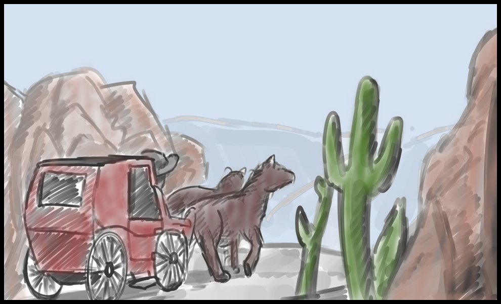
It was a mercilessly hot day, but then again, when is it not in the untamed Western Badlands?
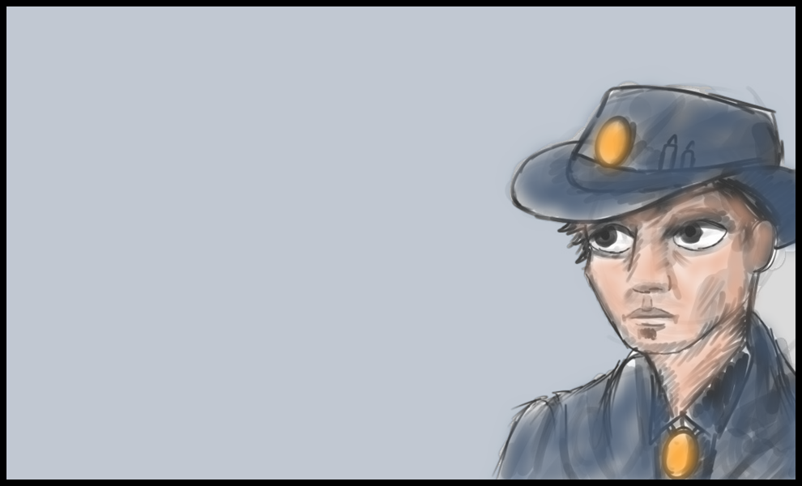
It wasn’t the ideal place to be a sheriff, outlaws and crooks seemed to outnumber the honest folks around these parts, but the pay is good and you’ve grown accustomed to the work.
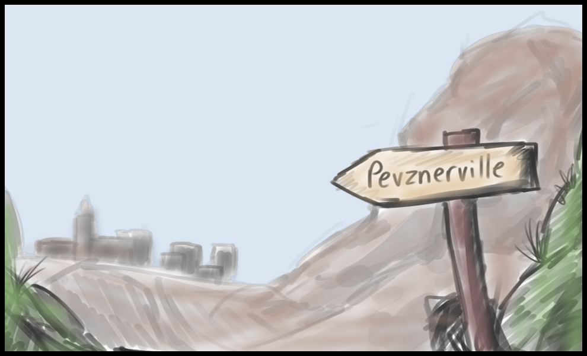
The year is 1857 and you’re the Sheriff of Pevznerville, a remote town with a population of just over 500.
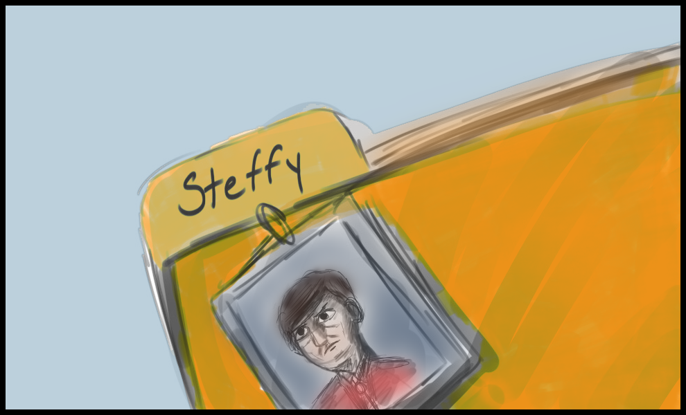
Your current case involves Old Man Steffy.
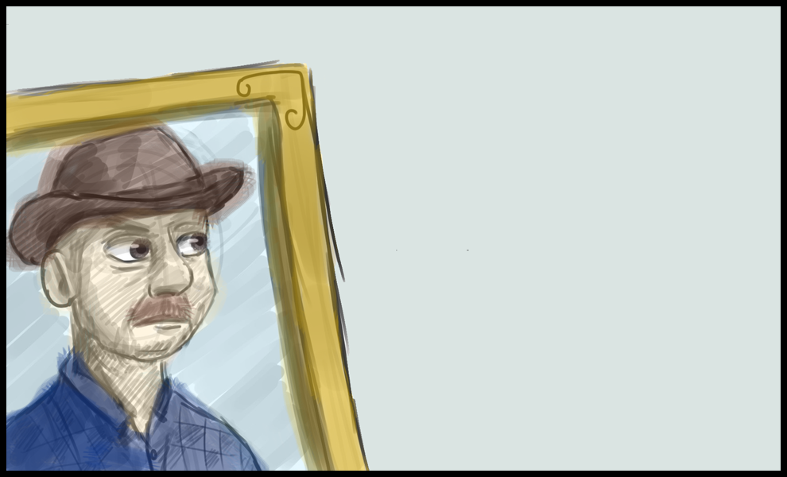
To say that Steffy was beloved in the community would be an overstatement, you wouldn’t even say he was tolerated. Steffy was a cranky, spiteful, hateful old man who had made his fortune through moneylending. He had made it a personal point of pride to aggravate the entire population of Pevznerville and had succeeded in this respect.
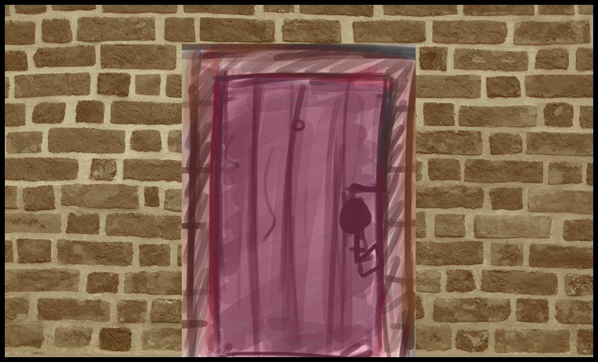
But BAH what does it matter, he’s dead now and it’s your job to figure out who killed the old man.
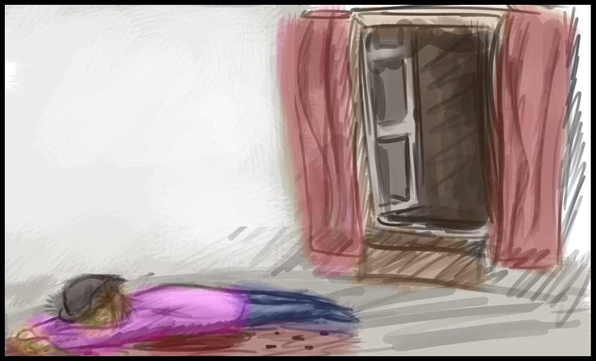
As you examine the murder scene of Old Man Steffy you’re surprised by the ferocity, Steffy is lying face down in the bedroom of his manor with the back of his head beaten in by some blunt instrument.
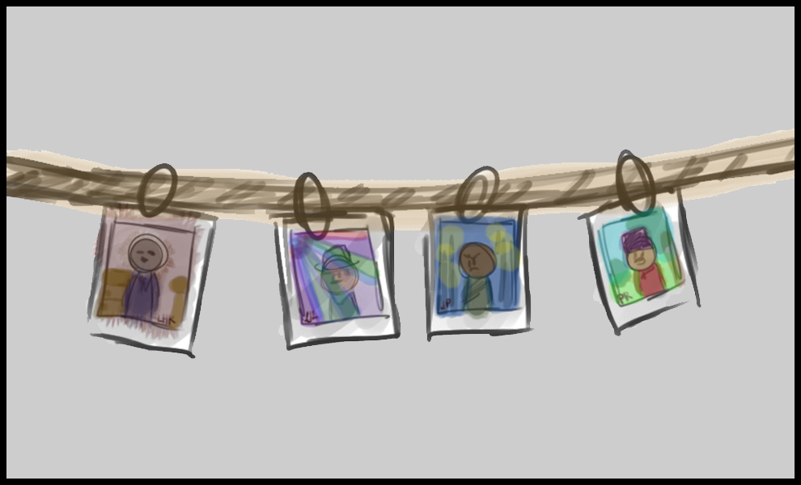
Given the small town of Pevznerville, you currently have 4 main leads.
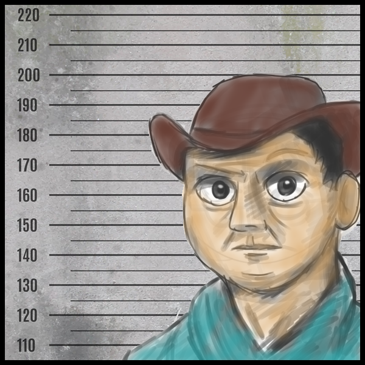
Steffy’s estranged firstborn son. He had recently arrived back in Pevznerville some 20 odd years after leaving. From what you’ve heard he’s been furious at Steffy for not following through on promised payments.
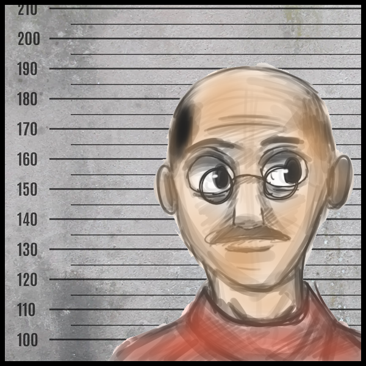
Apparently, Subar has been frustrated by Steffy’ loud complaints about the quality of the food he’s been cooking.
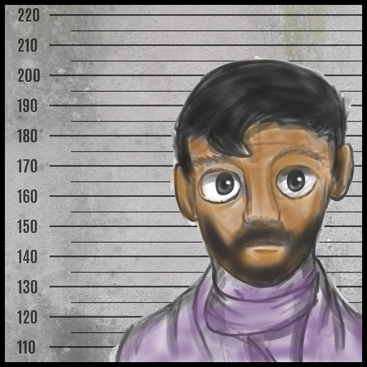
You’ve heard rumors that he was the result of one of Steffy’ many affairs, but you’re not sure about the truth behind these statements. He was the last one to see Steffy alive.
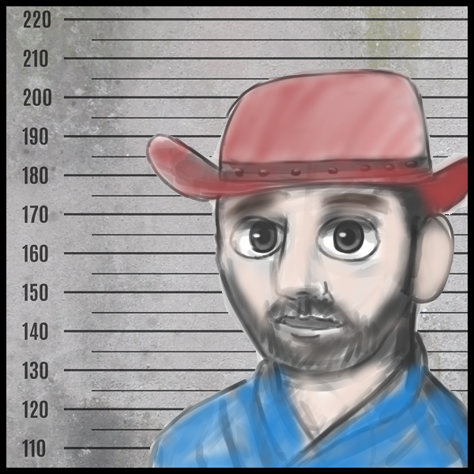